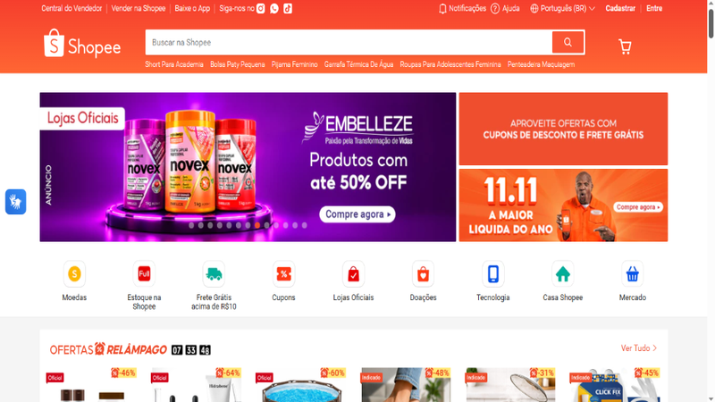
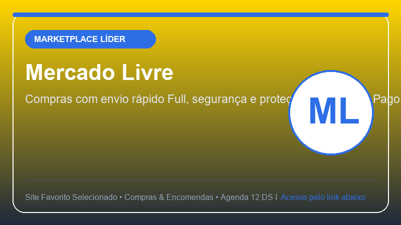
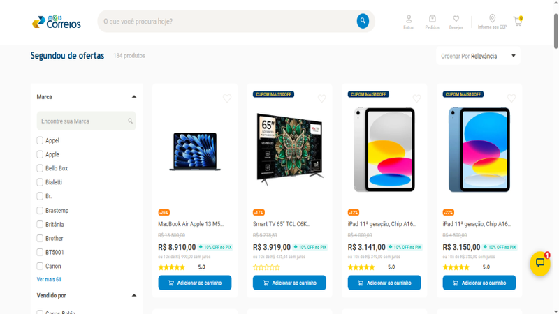
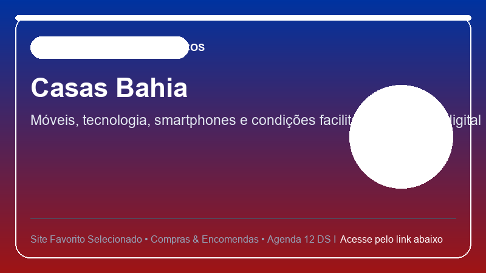
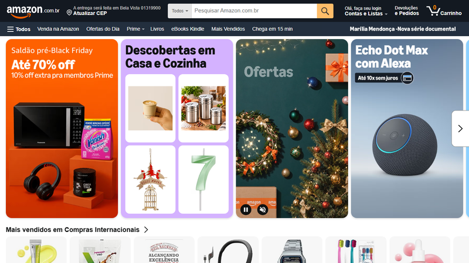

Esta página web foi desenvolvida como atividade prática da Agenda 12 (HTML5) do componente Desenvolvimento de Sistemas I da ETEC / Centro Paula Souza. Reúne 5 sites de compras online e rastreamento de encomendas que utilizo com frequência no cotidiano.

A Shopee é uma das principais plataformas de comércio eletrônico, famosa pelas ofertas relâmpago, cupons de desconto e facilidade de frete grátis em produtos nacionais e importados.
Clique aqui para acessar o site da Shopee

O Mercado Livre é o maior marketplace da América Latina. Possui grande variedade de produtos, garantia de compra segura com Mercado Pago e entregas rápidas através do Mercado Envios Full.
Clique aqui para acessar o site do Mercado Livre

O site dos Correios é indispensável para quem compra pela internet, permitindo fazer o rastreamento das encomendas passo a passo em tempo real, calcular prazos e valores de frete PAC e Sedex.
Clique aqui para acessar o site dos Correios

As Casas Bahia são referência nacional no varejo para a compra de eletrodomésticos, móveis, celulares e eletrônicos, oferecendo ofertas para o lar e facilidades de pagamento pelo carnê digital.
Clique aqui para acessar o site das Casas Bahia

A Amazon é reconhecida mundialmente pela ampla variedade de produtos, confiabilidade nas entregas, vantagens exclusivas do programa Prime e catálogo completo de livros e tecnologia.
Clique aqui para acessar o site da Amazon
Atividade desenvolvida por Iraci Berto Gomes — Curso Técnico em Desenvolvimento de Sistemas (ETEC / CPS) — Agenda 12 (HTML5).